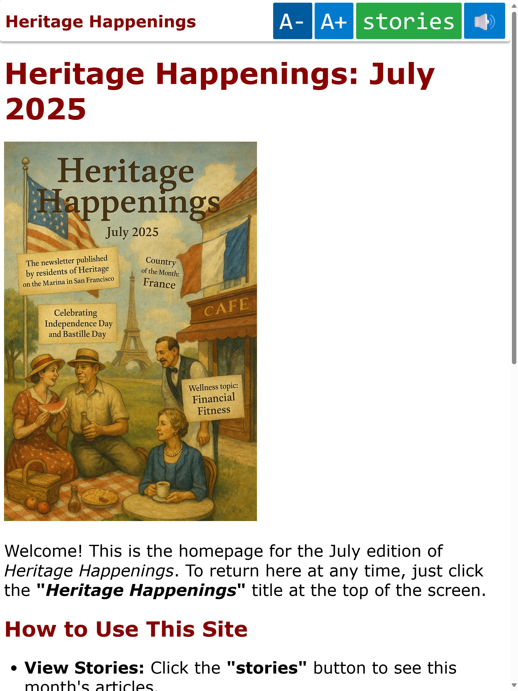

2025-07-28 Heritage Happenings Tablet App Update
Hello Tess, Nancy, Trish, Val and Tom
Here is a link to the updated Heritage Happenings App
Heritage Happenings App
Here is a screen shot of the updated app. Note the buttons have moved.

Fingers crossed: The jiggling that Nancy noticed is no longer an issue.
Updates include:
- Moved font size buttons to left, to help prevent you from changing font size by mistake
- Moved read-aloud button to right to it easier and faster to turn voice on and off
- The file icon was removed from the Stories post in order to help with making a more consistent menu body size.
- Updated the top menu bar to a more consistent height, so it is less "jumpy"
-
- Menu Bar background is now opaque and does not show the underlying text at all
Font Sizing
- Two finger pinch to reduce or enlarge the text, has been dropped. It was causing too many random updates. Now you must push the A- or A+ buttons to reduce or enlarge the text.
ReadAloud
- When ReadAloud is on, the icon has a bar to let you know, you can click again to turn it off.
- When you swipe to a new story, ReadAloud stops reading the old story and starts reading the new story.
Readability
- Header font sizes have been reduced slightly to make a more consistent text size in each post.
URL handling
- Homepage now displays with clean URL